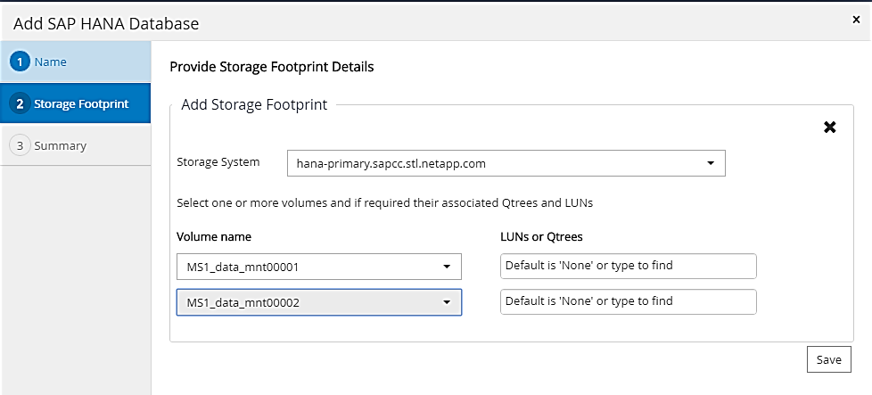
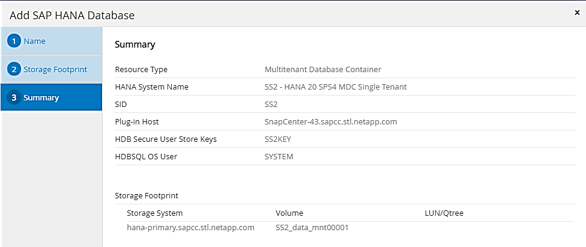
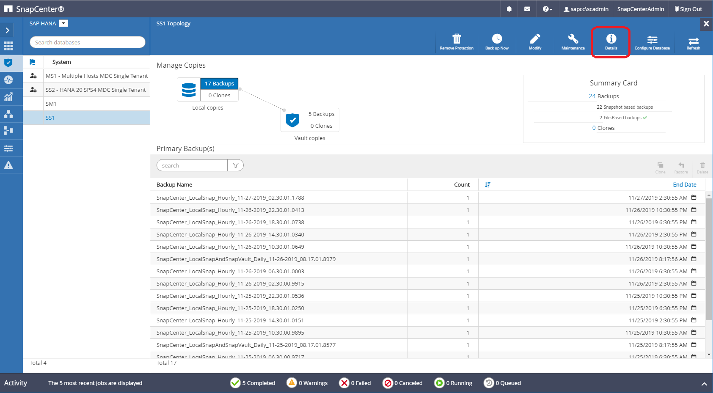

Request doc changes
Request doc changes Edit this page
Edit this page Learn how to contribute
Learn how to contributeSnapCenter resource-specific configuration for SAP HANA database backups
Contributors
This section describes the configuration steps for two example configurations.
-
SS2.
-
Single-host SAP HANA MDC single-tenant system using NFS for storage access
-
The resource is manually configured in SnapCenter.
-
The resource is configured to create local Snapshot backups and perform block integrity checks for the SAP HANA database using a weekly file-based backup.
-
-
SS1.
-
Single-host SAP HANA MDC single-tenant system using NFS for storage access
-
The resource is auto-discovered with SnapCenter.
-
The resource is configured to create local Snapshot backups, replicate to an off-site backup storage using SnapVault, and perform block integrity checks for the SAP HANA database using a weekly file-based backup.
-
The differences for a SAN-attached, a single-container, or a multiple-host system are reflected in the corresponding configuration or workflow steps.
SAP HANA backup user and hdbuserstore configuration
NetApp recommends configuring a dedicated database user in the HANA database to run the backup operations with SnapCenter. In the second step, an SAP HANA user store key is configured for this backup user, and this user store key is used in the configuration of the SnapCenter SAP HANA plug-in.
The following figure shows the SAP HANA Studio through which the backup user can be created.

|
The required privileges were changed with the HANA 2.0 SPS5 release: backup admin, catalog read, database backup admin, and database recovery operator. For earlier releases, backup admin and catalog read are sufficient. |
|
|
For an SAP HANA MDC system, the user must be created in the system database because all backup commands for the system and the tenant databases are executed using the system database. |

At the HANA plug-in host, on which the SAP HANA plug-in and the SAP hdbsql client are installed, a userstore key must be configured.
Userstore configuration on the SnapCenter server used as a central HANA plug-in host
If the SAP HANA plug-in and the SAP hdbsql client are installed on Windows, the local system user executes the hdbsql commands and is configured by default in the resource configuration. Because the system user is not a logon user, the user store configuration must be done with a different user and the -u <User> option.
hdbuserstore.exe -u SYSTEM set <key> <host>:<port> <database user> <password>
|
|
The SAP HANA hdbclient software must be first installed on the Windows host. |
Userstore configuration on a separate Linux host used as a Central HANA plug-in host
If the SAP HANA plug-in and SAP hdbsql client are installed on a separate Linux host, the following command is used for the user store configuration with the user defined in the resource configuration:
hdbuserstore set <key> <host>:<port> <database user> <password>
|
|
The SAP HANA hdbclient software must be first installed on the Linux host. |
Userstore configuration on the HANA database host
If the SAP HANA plug-in is deployed on the HANA database host, the following command is used for the user store configuration with the <sid>adm user:
hdbuserstore set <key> <host>:<port> <database user> <password>
|
|
SnapCenter uses the <sid>adm user to communicate with the HANA database. Therefore, the user store key must be configured using the <`sid>adm` user on the database host.
|
|
|
Typically, the SAP HANA hdbsql client software is installed together with the database server installation. If this is not the case, the hdbclient must be installed first. |
Userstore configuration depending on HANA system architecture
In an SAP HANA MDC single-tenant setup, port 3<instanceNo>13 is the standard port for SQL access to the system database and must be used in the hdbuserstore configuration.
For an SAP HANA single-container setup, port 3<instanceNo>15 is the standard port for SQL access to the index server and must be used in the hdbuserstore configuration.
For an SAP HANA multiple-host setup, user store keys for all hosts must be configured. SnapCenter tries to connect to the database using each of the provided keys and can therefore operate independently of a failover of an SAP HANA service to a different host.
Userstore configuration examples
In the lab setup, a mixed SAP HANA plug-in deployment is used. The HANA plug-in is installed on the SnapCenter Server for some HANA systems and deployed on the individual HANA database servers for other systems.
SAP HANA system SS1, MDC single tenant, instance 00
The HANA plug-in has been deployed on the database host. Therefore, the key must be configured on the database host with the user ss1adm.
hana-1:/ # su - ss1adm ss1adm@hana-1:/usr/sap/SS1/HDB00> ss1adm@hana-1:/usr/sap/SS1/HDB00> ss1adm@hana-1:/usr/sap/SS1/HDB00> hdbuserstore set SS1KEY hana-1:30013 SnapCenter password ss1adm@hana-1:/usr/sap/SS1/HDB00> hdbuserstore list DATA FILE : /usr/sap/SS1/home/.hdb/hana-1/SSFS_HDB.DAT KEY FILE : /usr/sap/SS1/home/.hdb/hana-1/SSFS_HDB.KEY KEY SS1KEY ENV : hana-1:30013 USER: SnapCenter KEY SS1SAPDBCTRLSS1 ENV : hana-1:30015 USER: SAPDBCTRL ss1adm@hana-1:/usr/sap/SS1/HDB00>
SAP HANA system MS1, multiple-host MDC single tenant, instance 00
For HANA multiple host systems, a central plug-in host is required, in our setup we used the SnapCenter Server. Therefore, the user store configuration must be done on the SnapCenter Server.
hdbuserstore.exe -u SYSTEM set MS1KEYHOST1 hana-4:30013 SNAPCENTER password hdbuserstore.exe -u SYSTEM set MS1KEYHOST2 hana-5:30013 SNAPCENTER password hdbuserstore.exe -u SYSTEM set MS1KEYHOST3 hana-6:30013 SNAPCENTER password C:\Program Files\sap\hdbclient>hdbuserstore.exe -u SYSTEM list DATA FILE : C:\ProgramData\.hdb\SNAPCENTER-43\S-1-5-18\SSFS_HDB.DAT KEY FILE : C:\ProgramData\.hdb\SNAPCENTER-43\S-1-5-18\SSFS_HDB.KEY KEY MS1KEYHOST1 ENV : hana-4:30013 USER: SNAPCENTER KEY MS1KEYHOST2 ENV : hana-5:30013 USER: SNAPCENTER KEY MS1KEYHOST3 ENV : hana-6:30013 USER: SNAPCENTER KEY SS2KEY ENV : hana-3:30013 USER: SNAPCENTER C:\Program Files\sap\hdbclient>
Configuration of data protection to off-site backup storage
The configuration of the data protection relation as well as the initial data transfer must be executed before replication updates can be managed by SnapCenter.
The following figure shows the configured protection relationship for the SAP HANA system SS1. With our example, the source volume SS1_data_mnt00001 at the SVM hana-primary is replicated to the SVM hana-backup and the target volume SS1_data_mnt00001_dest.
|
|
The schedule of the relationship must be set to None, because SnapCenter triggers the SnapVault update. |

The following figure shows the protection policy. The protection policy used for the protection relationship defines the SnapMirror label, as well as the retention of backups at the secondary storage. In our example, the used label is Daily, and the retention is set to 5.
|
|
The SnapMirror label in the policy being created must match the label defined in the SnapCenter policy configuration. For details, refer to “[Policy for daily Snapshot backups with SnapVault replication].” |
|
|
The retention for backups at the off-site backup storage is defined in the policy and controlled by ONTAP. |

Manual HANA resource configuration
This section describes the manual configuration of the SAP HANA resources SS2 and MS1.
-
SS2 is a single-host MDC single-tenant system
-
MS1 is a multiple-host MDC single-tenant system.
-
From the Resources tab, select SAP HANA and click Add SAP HANA Database.
-
Enter the information for configuring the SAP HANA database and click Next.
Select the resource type in our example, Multitenant Database Container.
For a HANA single container system, the resource type Single Container must be selected. All the other configuration steps are identical. For our SAP HANA system, the SID is SS2.
The HANA plug-in host in our example is the SnapCenter Server.
The hdbuserstore key must match the key that was configured for the HANA database SS2. In our example it is SS2KEY.

For an SAP HANA multiple-host system, the hdbuserstore keys for all hosts must be included, as shown in the following figure. SnapCenter will try to connect with the first key in the list, and will continue with the other case, in case the first key does not work. This is required to support HANA failover in a multiple-host system with worker and standby hosts. 
-
Select the required data for the storage system (SVM) and volume name.

For a Fibre Channel SAN configuration, the LUN needs to be selected as well.
For an SAP HANA multiple-host system, all data volumes of the SAP HANA system must be selected, as shown in the following figure. 
The summary screen of the resource configuration is shown.
-
Click Finish to add the SAP HANA database.

-
When resource configuration is finished, perform the configuration of resource protection as described in the section “Resource protection configuration.”
-
Automatic discovery of HANA databases
This section describes the automatic discovery of the SAP HANA resource SS1 (single host MDC single tenant system with NFS). All the described steps are identical for a HANA single container, HANA MDC multiple tenants’ systems, and a HANA system using Fibre Channel SAN.
|
|
The SAP HANA plug-in requires Java 64-bit version 1.8. Java must be installed on the host before the SAP HANA plug-in is deployed. |
-
From the host tab, click Add.
-
Provide host information and select the SAP HANA plug-in to be installed. Click Submit.

-
Confirm the fingerprint.

The installation of the HANA plug-in and the Linux plug-in starts automatically. When the installation is finished, the status column of the host shows Running. The screen also shows that the Linux plug-in is installed together with the HANA plug-in.

After the plug-in installation, the automatic discovery process of the HANA resource starts automatically. In the Resources screen, a new resource is created, which is marked as locked with the red padlock icon.
-
Select and click on the resource to continue the configuration.
You can also trigger the automatic discovery process manually within the Resources screen, by clicking Refresh Resources. 
-
Provide the userstore key for the HANA database.

The second level automatic discovery process starts in which tenant data and storage footprint information is discovered.
-
Click Details to review the HANA resource configuration information in the resource topology view.


When the resource configuration is finished, the resource protection configuration must be executed as described in the following section.
Resource protection configuration
This section describes the resource protection configuration. The resource protection configuration is the same, whether the resource has been auto discovered or configured manually. It is also identical for all HANA architectures, single or multiple hosts, single container, or MDC systems.
-
From the Resources tab, double-click the resource.
-
Configure a custom name format for the Snapshot copy.
NetApp recommends using a custom Snapshot copy name to easily identify which backups have been created with which policy and schedule type. By adding the schedule type in the Snapshot copy name, you can distinguish between scheduled and on-demand backups. The schedule namestring for on-demand backups is empty, while scheduled backups include the stringHourly,Daily,or Weekly.In the configuration shown in the following figure, the backup and Snapshot copy names have the following format:
-
Scheduled hourly backup:
SnapCenter_LocalSnap_Hourly_<time_stamp> -
Scheduled daily backup:
SnapCenter_LocalSnapAndSnapVault_Daily_<time_stamp> -
On-demand hourly backup:
SnapCenter_LocalSnap_<time_stamp> -
On-demand daily backup:
SnapCenter_LocalSnapAndSnapVault_<time_stamp>
Even though a retention is defined for on-demand backups in the policy configuration, the housekeeping is only done when another on-demand backup is executed. Therefore, on-demand backups must typically be deleted manually in SnapCenter to make sure that these backups are also deleted in the SAP HANA backup catalog and that the log backup housekeeping is not based on an old on-demand backup. 
-
-
No specific setting needs to be made on the Application Settings page. Click Next.

-
Select the policies to add to the resource.

-
Define the schedule for the LocalSnap policy (in this example, every four hours).

-
Define the schedule for the LocalSnapAndSnapVault policy (in this example, once per day).

-
Define the schedule for the block integrity check policy (in this example, once per week).

-
Provide information about the email notification.

-
On the Summary page, click Finish.

-
On-demand backups can now be created on the topology page. The scheduled backups are executed based on the configuration settings.

Additional configuration steps for Fibre Channel SAN environments
Depending on the HANA release and the HANA plug-in deployment, additional configuration steps are required for environments in which the SAP HANA systems are using Fibre Channel and the XFS file system.
|
|
These additional configuration steps are only required for HANA resources, which are configured manually in SnapCenter. It is also only required for HANA 1.0 releases and HANA 2.0 releases up to SPS2. |
When a HANA backup save point is triggered by SnapCenter in SAP HANA, SAP HANA writes Snapshot ID files for each tenant and database service as a last step (for example, /hana/data/SID/mnt00001/hdb00001/snapshot_databackup_0_1). These files are part of the data volume on the storage and are therefore part of the storage Snapshot copy. This file is mandatory when performing a recovery in a situation in which the backup is restored. Due to metadata caching with the XFS file system on the Linux host, the file is not immediately visible at the storage layer. The standard XFS configuration for metadata caching is 30 seconds.
|
|
With HANA 2.0 SPS3, SAP changed the write operation of these Snapshot ID files to synchronously so that metadata caching is not a problem. |
|
|
With SnapCenter 4.3, if the HANA plug-in is deployed on the database host, the Linux plug-in executes a file system flush operation on the host before the storage Snapshot is triggered. In this case, the metadata caching is not a problem. |
In SnapCenter, you must configure a postquiesce command that waits until the XFS metadata cache is flushed to the disk layer.
The actual configuration of the metadata caching can be checked by using the following command:
stlrx300s8-2:/ # sysctl -A | grep xfssyncd_centisecs fs.xfs.xfssyncd_centisecs = 3000
NetApp recommends using a wait time that is twice the value of the fs.xfs.xfssyncd_centisecs parameter. Because the default value is 30 seconds, set the sleep command to 60 seconds.
If the SnapCenter server is used as a central HANA plug-in host, a batch file can be used. The batch file must have the following content:
@echo off waitfor AnyThing /t 60 2>NUL Exit /b 0
The batch file can be saved, for example, as C:\Program Files\NetApp\Wait60Sec.bat. In the resource protection configuration, the batch file must be added as Post Quiesce command.
If a separate Linux host is used as a central HANA plug-in host, you must configure the command /bin/sleep 60 as the Post Quiesce command in the SnapCenter UI.
The following figure shows the Post Quiesce command within the resource protection configuration screen.